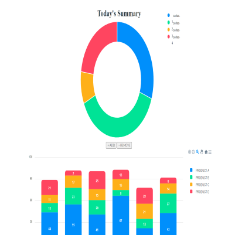
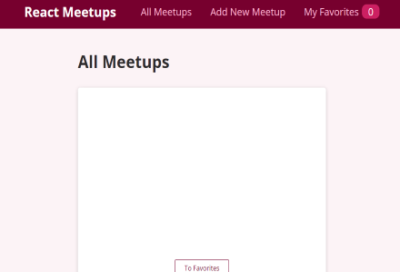

< Ujjwal Dixit >
Software Developer Intern;
About me
A computer science major seeking proffesional development. Intrested in learning web development and machine learning.
Some Fun Facts about me
- I love playing badminton and chess.
- Watching anime and sitcoms is my favorite passtime.
- I can speak three languages.
- I enjoy reading a lot.
Work Experience
Dhampur Sugar Industry
Software Engineer Intern May-Nov 2019- Facilitated the production of new software to automate the registration of Molasses and bagasse produced.
- Verified the quality of the software through elaborate testing to ensure a bug-free software.
- Helped Debugging and renew the old code bases.
- Prepared and maintained software documentation.
- Did weekly Deliverables.
- Learned under the tutelage of a Senior Software Developer.
Technical Skills
- Experienced in HTML, CSS, JavaScript, Python, Java, C#, C, C++, Bash, Shell.
- Knowledgeable about Data Structures and algorithms.
- Knowledgeable about Object Orientated Programming technique.
- Experienced in Database management using PostgreSQL and MySQL.
- Comfortable using distributed version control systems such as Git/Git Hub.
- Knows libraries and frameworks such as React, jQuery, Bootstrap, TailwindCSS, Express, Django, Numpy, Pandas, Sckit-Learn, Tensorflow.
- Knowledgeable about Agile software methodology, Software Architecture and SOLID design principle.
Soft Skills
- Highly Motivated and outstanding communication skills convey ideas and feelings effectively.
- A quick and passionate learner. Always open to feedback and constructive criticsm.
- A team player and enjoys Collaborating with people and exchanging ideas.
- Incredible at leading people, encouraging them to do their best and mentoring them.
- Disciplined and Dependable, puts in full effort and dedication to the work.
- Excellent interpersonal skills, always displays empathy and compassion towards others.
Projects

- This is a priority scheduler web app. It suggests what task you should do in what order and how much time you must spend on each task.
- This is a group project. Created for Intermediate software engineering class at the University of Saskatchewan.
- I was in the back-end team. I coded the entire algorithm myself and created an API for the algorithm in JavaScript.
- Application is based on MVC architecture. The back-end routing is done in node.js using Express.
- The front-end is designed using React and Bootstrap. Apexcharts was used for the charts.
- • The priority algorithm was designed in python. OOP concepts were used to design the algorithm better. The algorithm was called using API.
- All the user data is stored in a MySQL database.
Priori
 Link to GitHub
Link to GitHub
- This is a Future house price predictor web app.
- This project deploys ML model on a website. It has a future house price prediction model running at the server side to calculate the prices of house.
- It is using 3 different models together to calculate the prices. This is in order to make the predictions robust.
- The main model uses XGBoost model.
- The back end routing is handeled in Django. The entire back-end is based on MTC.
- The front-end designing is done using Bootstrap. To display the content Djanog's HTML template was used.
- This application uses MySQL to save user information and previously calculated data to speed up the website price calculation process.
Future Price Predict
Link to GitHub

- This web app stores and display the meetup locations of a user. User may save their favourite places also.
- It uses React and Css in the front end.
- It uses the SPA principle. This makes the website extremely fast by reducing the load-up time.
- Routing to different pages is done using React router dom.
Meetup Places
Link to GitHub
- This project was done to practise Responsive website designing.
- It uses HTML, Sass, and JavaScript.
- Media queries were used to design a responsive website. JavaScript was used to handle basic actions.
Responsive Website
Link to GitHub
Education
University Of Saskatchewan
Bachelor of Science - Computer Science Jan2020 - Current- Actively participates in class discussions and hands in assignment on time.
- Is an active member of many university organizations and unions.
- Currently has an overall percentage of 83.15%.